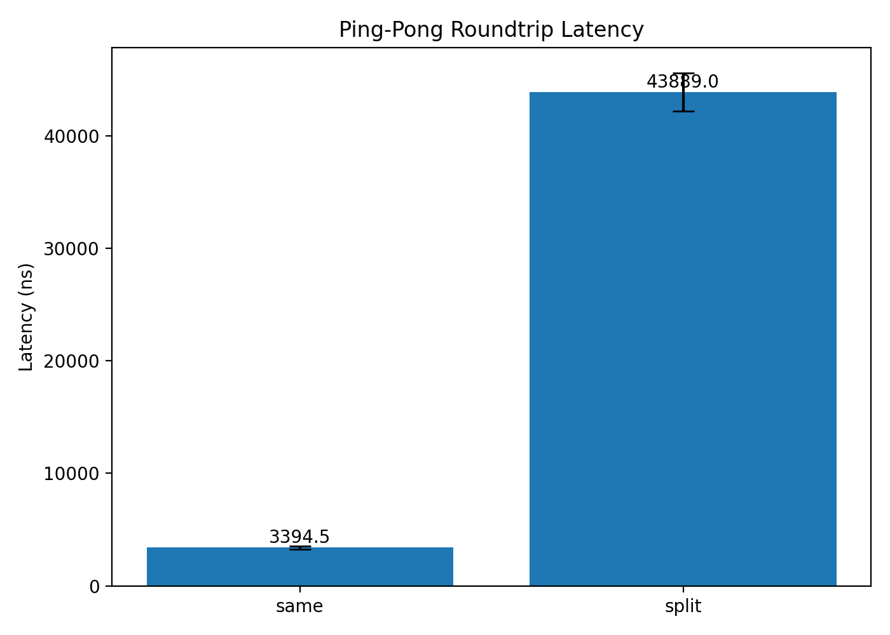
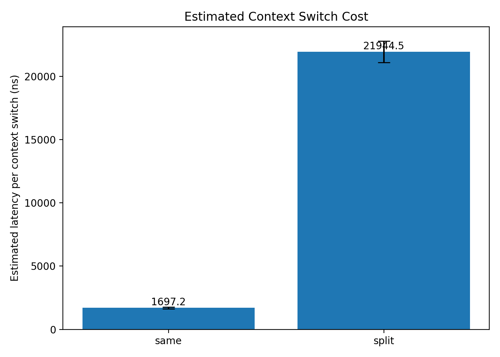
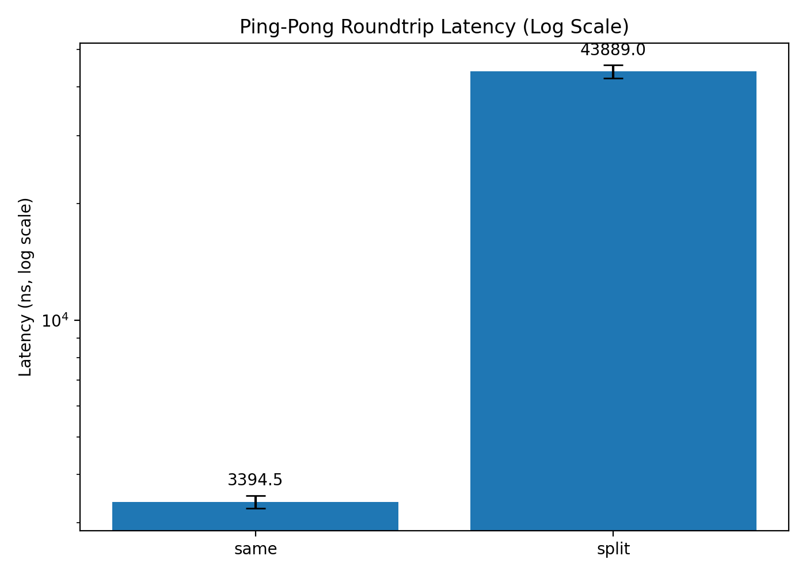

01-context-switch¶
Context Switch Cost¶
In this lab we measure the latency of process hand-offs across the operating system boundary.
Modern systems constantly switch execution between tasks:
- processes
- threads
- kernel tasks
- interrupt handlers
Each transition requires a context switch, where the scheduler suspends one task and resumes another.
Understanding the cost of this operation is fundamental to systems performance.
Experiment Goal¶
The goal of this experiment is to estimate the latency of a context switch.
We approximate this cost using a ping-pong benchmark between two processes.
parent → child → parent
Each round-trip involves two scheduler hand-offs:
- parent blocks and child wakes up
- child blocks and parent wakes up
Therefore we estimate:
context_switch_cost ≈ roundtrip_latency / 2
This estimate includes additional overhead such as:
- pipe syscall cost
- scheduler wakeup latency
- cache and TLB effects
Benchmark Design¶
The benchmark uses two pipes to exchange a single byte between a parent and child process.
## Parent Child
write(pipe)
read(pipe)
write(pipe)
read(pipe)
Execution flow:
parent write
child wakeup
child write
parent wakeup
This pattern forces the scheduler to alternate execution between the two processes.
Experimental Environment¶
CPU: Intel Core i7-1360P
Architecture: x86_64
Threads: 16
Kernel: 6.6.87.2-microsoft-standard-WSL2
Hypervisor: Microsoft Hyper-V
Environment: WSL2
The benchmark runs inside Windows Subsystem for Linux (WSL2).
This means scheduling may involve multiple layers:
Linux guest scheduler
→ Hyper-V hypervisor
→ Windows host scheduler
Cross-CPU wakeups therefore may be significantly slower than on bare metal Linux.
Measurement Setup¶
Benchmark parameters:
iterations = 200000
warmup = 20000
repeats = 5
Two scheduling modes were tested:
Same-core¶
parent_cpu = 0
child_cpu = 0
Both processes run on the same logical CPU.
Split-core¶
parent_cpu = 0
child_cpu = 1
Parent and child run on different CPUs.
Raw Measurements¶
Same-core roundtrip latency¶
3281.94 ns
3429.07 ns
3239.27 ns
3498.98 ns
3523.14 ns
Average:
3394.48 ns roundtrip
1697.24 ns estimated context switch
Split-core roundtrip latency¶
42388.11 ns
42457.03 ns
44279.63 ns
46564.50 ns
43755.49 ns
Average:
43889 ns roundtrip
21944 ns estimated context switch
Scheduler Validation¶
To verify that the benchmark actually produces context switches, we measured scheduler events using perf.
sudo perf stat -e context-switches,cpu-migrations ./context_switch
Result:
context-switches: 440005
cpu-migrations: 2
Total ping-pong operations executed:
warmup + iterations
= 20000 + 200000
= 220000
Expected context switches:
220000 × 2 = 440000
Observed:
440005
This confirms that the benchmark generates approximately two context switches per round-trip.
Results¶
Round-trip latency¶

Estimated context switch latency¶

Log-scale comparison¶

Analysis¶
Same-core switching¶
Measured latency:
~3.4 µs roundtrip
~1.7 µs per context switch
This value is higher than typical bare-metal Linux measurements (often below 1 µs) but reasonable in a virtualized environment.
Split-core switching¶
Measured latency:
~44 µs roundtrip
This is roughly:
13× slower than same-core switching
The most plausible explanation is cross-vCPU wakeup overhead in WSL2.
In this configuration, a wakeup must traverse:
guest scheduler
→ hypervisor
→ host scheduler
→ target vCPU
This multi-layer scheduling path introduces significant latency.
Key Takeaways¶
- A simple pipe-based ping-pong benchmark can effectively measure scheduler switching behavior.
- Same-core context switching in WSL2 costs roughly 1–2 µs.
- Cross-CPU wakeups in virtualized environments can be an order of magnitude slower.
- Scheduler topology and virtualization strongly influence observed latency.
Next Experiments¶
This experiment opens the door to several follow-up measurements:
- thread ping-pong using
futex sched_yieldmicrobenchmarks- lock contention experiments
- thread-pool wakeup latency